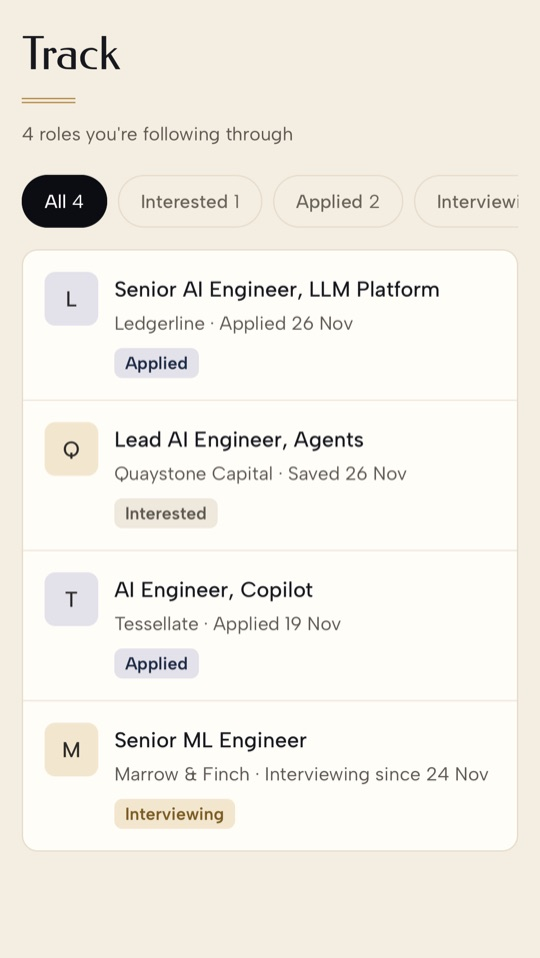

怎麼用
跑腿交給 JTBF，決定權在你。
找職位、調整履歷、準備面試，JTBF 幫你做；選哪份工作、什麼時候申請，由你決定。JTBF 從不替你申請。
1 · JTBF + 你找出適合的職位
告訴它你想找什麼。JTBF 每天查看 250 多家銀行、基金和金融科技公司，挑出適合你的新職位。然後由你來滑：右滑加入候選，左滑跳過，值不值得一試由你決定。

2 · JTBF按職位調整履歷
AI 按職位重新排列和改寫你自己的履歷。不會無中生有，每一處改動你都看得到。

3 · 你自己去申請
到僱主自己的網站，照他們的方式申請。JTBF 從不替你申請。

4 · JTBF幫你準備面試
快要面試了？JTBF 幫你準備，每份申請和進度也都在同一個地方。

截圖來自 JTBF App，用的是虛構公司的示範職位。
薪酬沒寫，也心裡有數
很多招聘廣告都不寫薪酬。遇到這種情況，JTBF 會根據市場數據估算薪酬範圍，並清楚標明是估算。
適合你的職位，幫你找好
JTBF 替你搜尋適合你的職位，不用自己慢慢找。有心儀的公司？也可以追蹤它，它一有新職位就會直接送到你面前。
搶先一步
越早申請，機會往往越大。JTBF 查看 250 多家公司的招聘頁，一有適合你的新職位就馬上通知你。
適合誰
想進金融或金融科技公司的人，都適合。
分析師或工程師、營運或設計、第一份工作還是第五份都沒關係：只要公司在金融圈，JTBF 就在替你看它的招聘頁。
- 銀行
- 對沖基金
- 量化交易公司
- 私募股權
- 支付
- Neobank
- 加密貨幣
- 以倫敦和英國為主
- 也有美國職位
- 也有遠端職位
方案
免費開始，認真起來就升級 Pro。
Pro 以六個月為一期，而不是一整年。希望你根本用不完。
免費版
想用多久都行。
- 每天 2 個為你挑選的職位，並告訴你其餘還有多少
- 每天 1 份 AI 調整的履歷
- 最多追蹤 2 家公司
- 追蹤每一份申請
Pro 上架優惠
早登記的朋友可享上架優惠，JTBF 上架時我們會寄電子郵件告訴你詳情。
- 所有為你挑選的職位，JTBF 一找到就送上
- 每個職位都有 AI 調整的履歷，不限次數
- 想追蹤多少家公司都可以
- 追蹤每一份申請
價格隨 App 上架公布，透過 App Store 或 Google Play 訂閱。搶先登記
常見問題
好問題，直接回答。
JTBF 會替我申請嗎？
不會，這是刻意的。JTBF 按職位幫你調整履歷，然後帶你到僱主自己的頁面，照他們的方式申請。每一份申請都由你作主。
職位從哪裡來？
直接來自 250 多家銀行、對沖基金、量化交易公司、私募股權公司、支付公司、neobank 和加密貨幣公司的招聘頁。JTBF 替你逐一查看，每天把新職位送上。
薪酬是真的嗎？
公司有公開範圍的，你會看到它。沒有公開的，我們會給出估算範圍並註明「估算」，讓你一眼分得清。
涵蓋哪些地區？
以倫敦和英國為主，也包括美國和遠端職位。
什麼時候可以用？
2027 年 1 月在 App Store 和 Google Play 上架。先登記，上架時我們會寄電子郵件通知你。
我的電子郵件會怎麼處理？
只用來通知你 JTBF 上架和上架優惠，不作其他用途。詳情在這裡。
私隱
你的電子郵件，說清楚。
登記名單只保留最少的資料，也只保留最短的時間。
- 我們收集什麼
- 你的電子郵件地址，以及你是在英文還是中文頁面登記，好用對的語言寫信給你。
- 為什麼收集
- 用來通知你 JTBF 上架和上架優惠。我們不會寄其他內容，也不會把你的地址交給任何人作行銷用途。
- 誰負責處理
- Woven Studio 對你的資料負責。我們使用 Kit（kit.com）保存名單和寄送電子郵件。Kit 是美國公司，你的地址可能會存放在美國。
- 處理依據
- 你登記時給予的同意。你可以隨時取消訂閱，撤回同意。
- 保留多久
- 保留到 JTBF 上架後三個月，或到你取消訂閱為止，以較早者為準，之後即刪除。
- 你的權利
- 每封電子郵件都附有取消訂閱連結。如想查看、更正或刪除我們持有的資料，請寫信到 studio.woven.london@gmail.com。如對我們的處理方式不滿，可以向英國資訊專員辦公室（ICO）投訴。